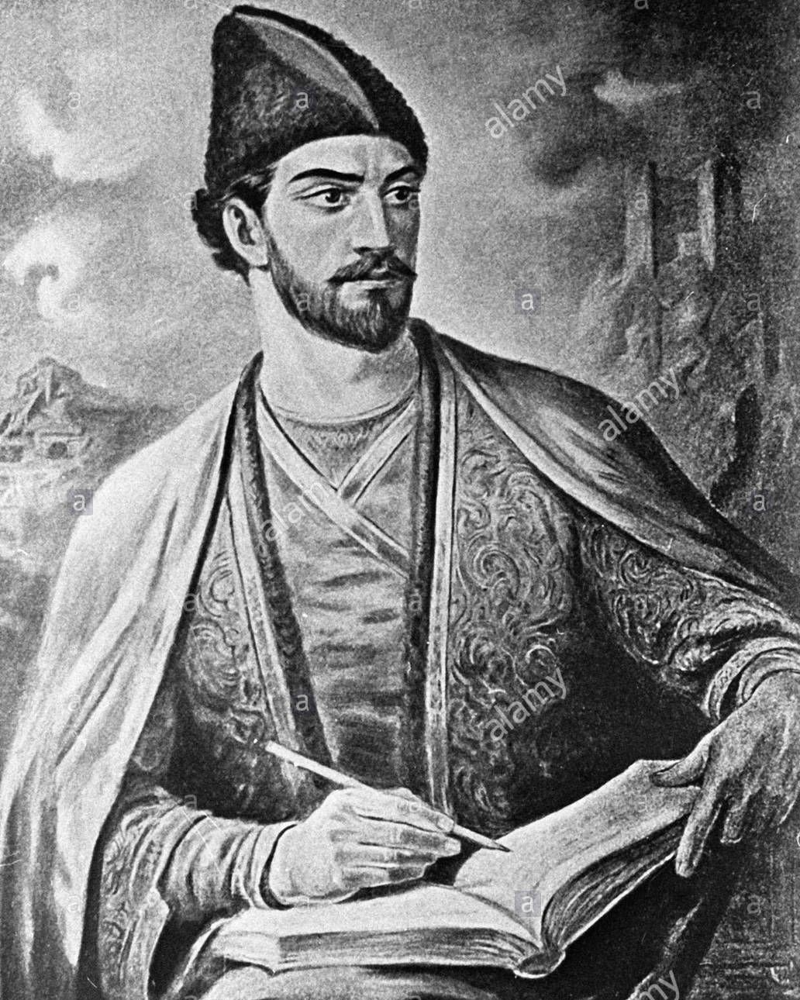

click image
შოთა რუსთაველის ცხოვრებისა და მოღვაწეობის შესახებ ჩვენამდე თითქმის
არავითარ ცნობას არ მოუღწევია. რიგი ისტორიული, ლიტერატურული და ფოლკლორული
წყაროების საფუძველზე იქმნება დიდი პოეტის
ცხოვრებისა და მოღვაწეობის არაერთი ვერსია. რუსთაველის ბიოგრაფიული მონაცემების დასადგენად
ერთ-ერთი ძირითადი წყარო თვით მისი პოემაა.
რუსთაველის ავტორობას გვიმოწმებს „ვეფხისტყაოსნის“ პროლოგი („დავჯდე,
რუსთველმან
გავლექსე, მისთვის გულ-ლახვარსობილი“, „მე, რუსთველი, ხელობითა ვიქმ საქმესა ამა დარი“), ეპილოგი,
აგრეთვე XV-XVIII საუ
კუნეების ქართული მწერლობა (ამაზე ადრინდელი ცნობები არ მოგვეპოვება). სახელწოდება რუსთაველი
(რუსთველი)
უკავშირდება გეოგრაფიულ პუნქტს რუსთავს და ნიშნავს რუსთავის მკვიდრს ან რუსთავის
ციხე-ქალაქის გამგე
ბელს, მეპატრონეს.
იმდროინდელი საქართველოს სოციალურ-პოლიტიკური სინამდვილე გვაფიქრებინებს,
რომ მეორე მნიშვნელობა
უნდა იყოს სწორი. რუსთაველის სახელის შესახებ პირდაპირ ცნობას გვაწვდიან
თეიმურაზ I (იგი „ვეფხისტყაოსნის“ პერსონაჟთა შესახებ
ამბობს: „ესენი შოთა რუსთველმან შეამკო არსთა
მკობითაო“) და XVII-XVIII საუკუნეებში სხვა ქართველი მწერლები.
ამასვე ადასტურებს რუსთაველის
ფრესკული პორტრეტი XIII საუკუნის I ნახევრის წარწერით, რომელიც რესტავრირებული სახითაა
შემონახული
იერუსალიმის ჯვრის მონასტრის სვეტზე (ტ. გაბაშვილის მიერ 1757-1758 ნანახი და შემდეგში ზეთის საღებავების
სქელი ფენით დაფარული ფრესკა გამოავლინა იერუსალიმის სამეცნიერო ექსპედიციამ) და ამავე საუკუნეში მონასტრის
სააღაპო
წიგნში მოსახსენებელი „შოთაჲსა ჲ“, რომელიც იგივე რუსთაველი უნდა იყოს. ფრესკის წარწერის მიხედვით,
რუსთაველს
შეუკეთებია და განუახლებია ჯვრის მონასტერი.
ვეფხისტყაოსნის მანუსკრიპტი
სავარაუდოა, რომ პოეტი ყოფილა სამეფო კარის დიდი მოხელე, ვეზირი,
თამარ მეფესთან
დაახლოებული პირი. როგორც ჩანს, მას ევალებოდა ქართულ საკულტო ძეგლებზე, მ. შ. ჯვრის მონასტერზე ზრუნვა.
გამოთქმულია მოსაზრება, რომ პოეტი სიცოცხლის მიწურულს გაემგზავრა იერუსალიმში, აღიკვეცა ბერად, იქვე
აღესრულა და იქვეა
დასაფლავებული. არ მართლდება გადმოცემა პოეტის ბერად შედგომაზე: ფრესკაზე გამოხატული
ქართველი დიდებული ერისკაცის
სამოსელშია გამოწყობილი. თანაც რუსთაველს, როგორც ვეზირს, შეეძლო
საქართველოდანვე წარემართა მონასტრის
შეკეთება-განახლებისათვის საჭირო საქმიანობა. რუსთაველის ბიოგრაფიულ
ცნობების შემცველ სხვა წერილობით წყაროებს ჩვენამდე
არ მოუღწევია. ხალხური გადმოცემით, პოეტი მესხი უნდა
იყოს. მესხად თვლის მას პოეტი არჩილ II. ვეფხისტყაოსნის გაგრძელებანიც
მიგვანიშნებს შოთას მესხურ წარმოშობაზე.
შეასძლებელია სახელწოდება რუსთაველი უკავშირდებოდეს მესხეთის რუსთავს,
რომელიც მდებარეობს
ახალციხე-ასპინძის შარაგზის მახლობლად.